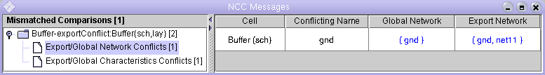
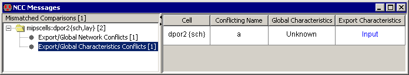

In an Export/Global Network conflict, a Cell has both an Export and a global signal with the same name, but their Networks are topologically different (Figure 12). Both the global Network Export and the Cell Export are highlightable.

Figure 12: The
Export/Global Network Conflicts table
In an Export/Global Characteristics conflict, one Cell also has both an Export and a global signal with the same name, but their characteristics differ (Figure 13). The Cell Export can be highlighted by clicking on its characteristics.

Figure 13: The
Export/Global Characteristics Conflicts table